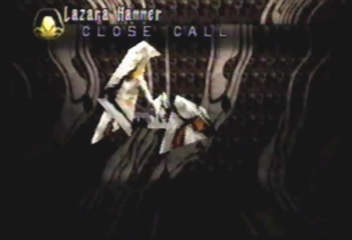
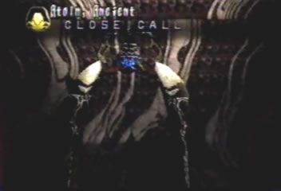
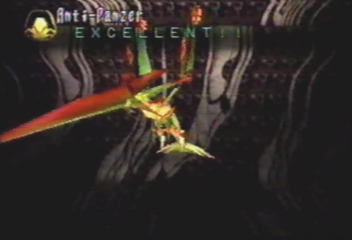
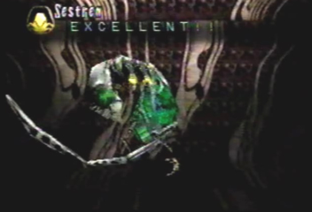
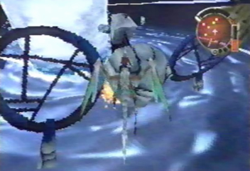
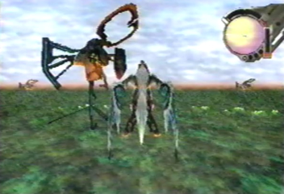
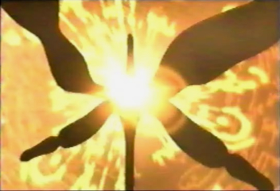

Pure Type Monster List
(Written word for word from Panzer Dragoon Saga)
by Jeremy Prusak
 |
Lazara These Bio-technical terrors were created by the Towers. Traveling in squadrons, their purpose is to eliminate anything the Towers see as a threat to the balance they've created. |
 |
Lazara Hunter Lazara Hunters are the squadron leaders. They have the ability to raise sheilds around the entire group. When Lazara attack, they attack as a team. |
 |
Lazara Hammer The Lazara Hammers are responsible for patroling the seas. They also serve as the Towers' defense system. They have the ability to travel above and below the water. |
Lazara Skimmer The leaders of the water squadrons, they help coordinate the attacks of their groups. It is unknown whether they control their own actions, or if they are simply pawns of the Towers. |
Hellion Hellions patrol the Forbidden Zone. They posses a meteor-like attack that always hits its target. Because they were created by the Towers, they do not need to eat or sleep. |
Atolm Dragon Atolm is a Guardian of the Ancient Age. His appearence strikes fear into the hearts of the most hardened warriors. At this point, he does not seem to have fully recovered from his long slumber. |
 |
Guardian Dragon A ghost of the past, this ancient horror has risen again to serve the Towers. It is believed that this monster can never truly die. |
 |
|
Drenholm A Gaurdian of Uru. Drenholm hovers above water and harneses energy from the skies to unleash devastating attacks on all that disturb the serenity of Uru. |
 |
Atolm, Orbs Atolm is escorded by two pairs of orbs. One pair is responsible for regeneration, while the other focuses on attacking. Atolm still retains all of his normal powers. |
Scavenger Scavengers are asigned to defend Mel-Kava. They are known for their speed and their aggressive tendencies. They will attack anything that invades their air space. |
Drone Working in pairs, these drones are able to repel attacks from all directions. They will attack if they are provoked. Their primary purpose is to defend Mel-Kava from long range laser attacks. |
Protodrone Protodrones are the prototypes of a second model of drone. Fortunately, the ancient wars ended before more of these models were created. |
| Photon Cannon Photon Cannons are organic mechanisms that grow inside Mel-Kava. They can harness Mel-Kava's internal energy and focus it on invaders. They act like living guns, rather than thinking creatures. |
Plasma Spider Plasma Spiders roam the corridors of Mel-Kava. Their purpose is to regulate and repair all irregularities in Mel-Kava's operating systems. They can generate and discharge plasma. |
Reactor Mel-Kava's Reactor is a source of power for Mel-Kava. It does have artificial intelligence, and will adapt to all situations. |
 |
Atolm, Ancient Atolm has found the ancient weopon he used in the past. It is a weightless mass of laser cannons, capable of destroying an entire region with a single blast. |
Atolm, Orbs 2 Once Atolm reaches full strength, he gains the ability to summon his dreadful orbs at will. If his weakness is not exploited, he is all but invincible. |
Glide Dragon Glide Dragons are mass produced by the Towers whenever the Towers' artificial ecosystems become imbalanced. Once summoned, they will attack anything until they are destroyed. |
|
Golia Hunter Golia Hunters are predators of the forest. For an ancient battle, the Golia were created. In time, it appears the Golia have adapted to hunt in forests. They were created to hunt, but they do not eat. |
Golia Tracker Golia trackers are similar to Golia Hunters, but instead of bounding through the forests, they fly above the trees, and search for victims. |
Arangata Arangata were released by the Tower to form a tight defense in strategic areas. As long as their "roots" are intact, they are indestructible. |
Infested Grig Orig Grig Orig, crawling with energy feeding parasites, lost all control of its weapons and drifted aimlessly, firing in all directions. |
Sentinel A sentinel is one of the Towers' internal defense mechanisms. If any traps are triggered, a Sentinel is summoned to destroy the unwelcome visitor. |
Scorpitara If an alarm is triggered, Scorpitaras are summoned. They track their pray and release a concentrated blast of energy. After they attack, they immediately teleport back to a recharging station. |
 |
Twin Guardians A pair of powerful guardians that defend the middle core of the Tower. Their two bodies are either psychically linked, or a single entity controls both bodies. |
Battle Droid The Battle Droid is the ultimate form of the Sentinel. Armed with powerful attacks, its purpose is to defend the Tower from invaders. |
Anti-Basic Created by Sestren, this dragon has the same appearence and attacks as Lagi's Basic Form. |
Anti-Valiant Created by Sestren, this dragon has the same appearence and attacks as Lagi's Valiant Form. It relies mostly on a strong defense. |
Anti-Stripe Created by Sestren, this dragon has the same appearence and attacks as Lagi's Stripe Form. It fights primarily with lasers. |
 |
Anti-Panzer Created by Sestren, this dragon has the same appearence and attacks as Lagi's Panzer Form. The fastest of the evil dragons, it attacks relentlessly. |
Anti-Eye Created by Sestren, this dragon has the same appearence and attacks as Lagi's Eye Form. It's offense consists of powerful magic spells. |
 |
Sestren Sestren is the almighty being that links all of the Towers. His embryonic appearence fools opponents into lowering their defenses. |
Sestren Morphic Sestren is able to morph itself into several differnt forms. In this later stage Sestren is deadly. |
Sestren Exsis Few have seen Sestren Exsis in visions and dreams, but only one has encountered it. It has the ability to hurl objects from the past and present from an infinate abyss. |
Misc.
Not listed in "Defeated Enemies Data"
 |
 |
Unknown Pure Type Monster This is the Pure Type Monster that Edge fought at the beginning of the game, in the opening movie. I don't believe it has a name, at least I'm not aware of its name. Its white armor is extremely strong and almost indestructible. bullets just bounce off of it. |
Unknown Pure Type 2 Another heavily armored pure type monster similar to the one Edge fought at the Excavation Site. The only difference between the two is the fact that this one has a gleaming red eye instead of a blue one, and very slight differences in its legs. |
 |
Shellcoof Guardian These pure type guardians aid Shellcoof with its reactivation and repair process. They will defend Shellcoof against any intruders that may be a threat to its resurrection. Their main priority is to guard the REPAIR-BIT, which is the main component that is making repairs on the ancient ship. |
 |
Shellcoof More organic than mechanical, this ancient ship from the past is just as alive as any other pure type monster. When in danger it can defend itself very well. With an arsenal of deadly lasers, the only thing that can stop it would have to be the dragon itself. |
| Blind Pure Type Found in the underground labs of Uru, this crab-like creature is completely blind. As long as you don't make any sudden movements they won't harm you. If a noise is heard, say good-bye to your life. |
 |
 |
Prototype Dragon These dormant or failed creations can be found in the underground ruins of Uru. They were created by humans. |
 |
 |
Unknown Uru Pure Type This unknown Pure Type can be found on floor B3F West, in the Underground Ruins of Uru. They may be prototypes in a failed experiment just like the Prototype Dragons, or they may have had a greater purpose. We will never know. |
 |
|
Zoah Drones When you first enter the Forest of Zoah, you fight a sequence of battles against Protodrones and Drones, leading up to one of the sub-bosses Arangata. Outside of battle, the drones present around the canopy, look nothing like the Drones you fight once engaged in combat. With a large central eye, and multiple appendages, these drones are strikingly different. |
 |
Mel-Kava Guardian These pure type guardians can be found in Mel-Kava's second central reactor room. They protect the central reactor, by shooting out energy particles at potential threats to Mel-Kava's safety. If you shoot them in their neck area, they will fall apart. |
Mel-Kava Another ship from the Ancient Age. It defends the path to the Tower. It also seems to be more alive than just a regular mechanical ship. |
 |
 |
Wasp Pure Type Edge stumbles upon these dormant creatures, as he moves throughout the Tower. They are insect-like and resemble wasps. Once the Tower becomes active, they are awakened and released outside the Tower. A strange thing to note, among the many swarms of monsters released from the Tower, these ones are nowhere to be found. |
Tower Guardians Once the Tower becomes fully activated, monsters within are awakened and leave the Tower in massive swarms. Among them, are black ships that you might recognize from Panzer Dragoon 2 Zwei. A majority of the swarm, consists of strange pure type monsters. They have many appendages and fly at great speeds. |
| Sestren Dragon Its main purpose is to defend Sestren and eliminate any intruders. |
 |
Fused Drenholm Sestren delivers a series of summons to aid him in the final battle. Drenholm is one of these summons. Drawing whatever it wants from time and space, Sestren unleashes Drenholm"s wrath upon Edge and his dragon. Drenholm fused with the Sestren program is a worthy opponent indeed. |
 |
| Fused Golia Fused with the Sestren program, the Golia is summoned from the Forest of Zoah to aid in Sestren's menecing attack. |
 |
| Fused Mel-Kava Mel-Kava is called upon once more. Stronger than ever and fused with the Sestren program, its masive power is surley doubled under Sestren's control. |
 |
 |
| Fused Nooth You may remember this pure type monster from Panzer Dragoon 2 Zwei. Lundi once fought this ancient creature in Episode 5. The snowy landscape in which this creature was once accustomed to is no more, as it is thrown into and fused with the Sestren program. Its new purpose, to defeat the Heresy Program. |
| Fused Shellcoof This ancient ship originally from the Sestren program, is resurrected and refused with the program. Its given one final chance by Sestren, to defeat and subdue the Heresy Program. |
 |
 |
| Fused Guardian Another creature from Panzer Dragoon 2 Zwei (Episode 4). Sestren has torn open a portal in time and space and has taken this creature from its aquatic ruin. It has no choice but to do Sestren's bidding. It is a formidable and powerful summon. |
 |
| Fused Prototype D The true final boss of Panzer Dragoon 2 Zwei, that is, if you were able to meet the requirements. This pure type creation is one to watch out for. Its back, and stronger than ever. With its new found strength, it will stop at nothing to destroy whatever it comes into contact with. |
 |
The Heresy Program Lagi's other half. A renegade program that ejected itself from the Sestren network. Its only purpose is to destroy the Towers and free mankind from the will of the Ancients. |
| The Divine Visitor The Divine Visitor is "you" the player; the one that controlls Edge throughout the game. Even you have a part to play in the epic story of Panzer Dragoon Saga! |